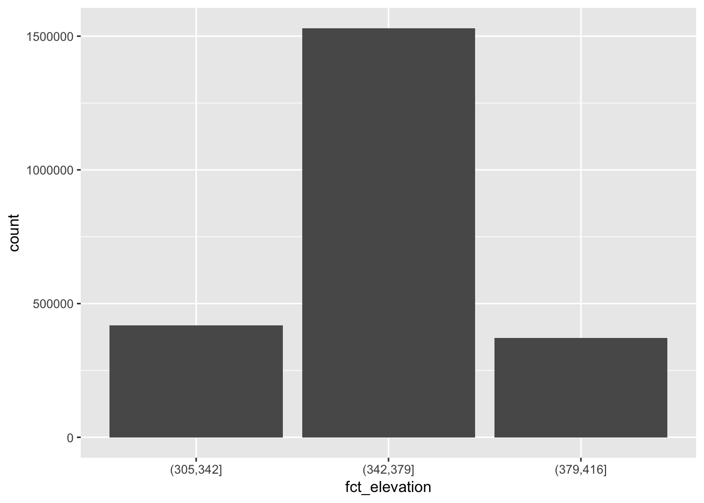
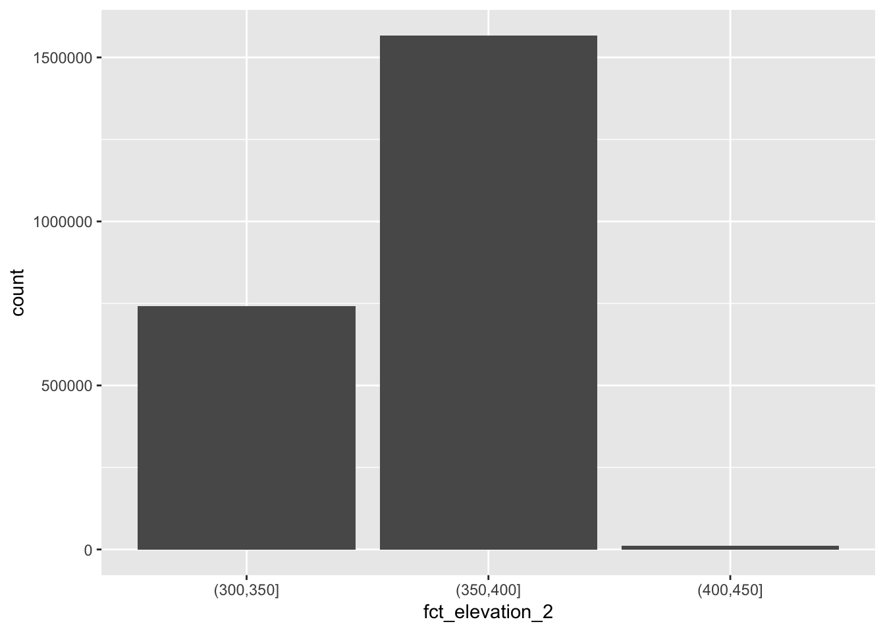
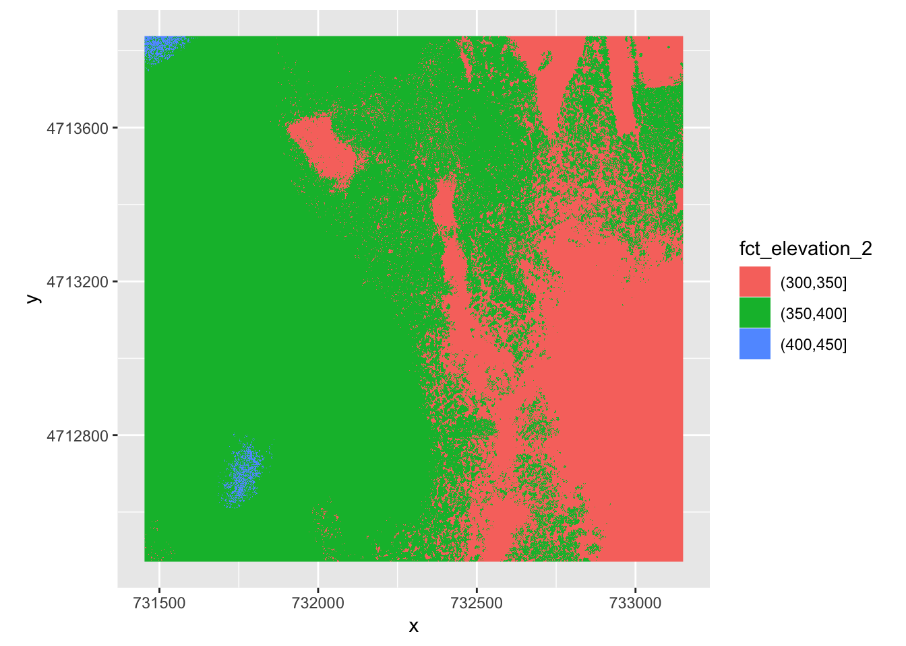
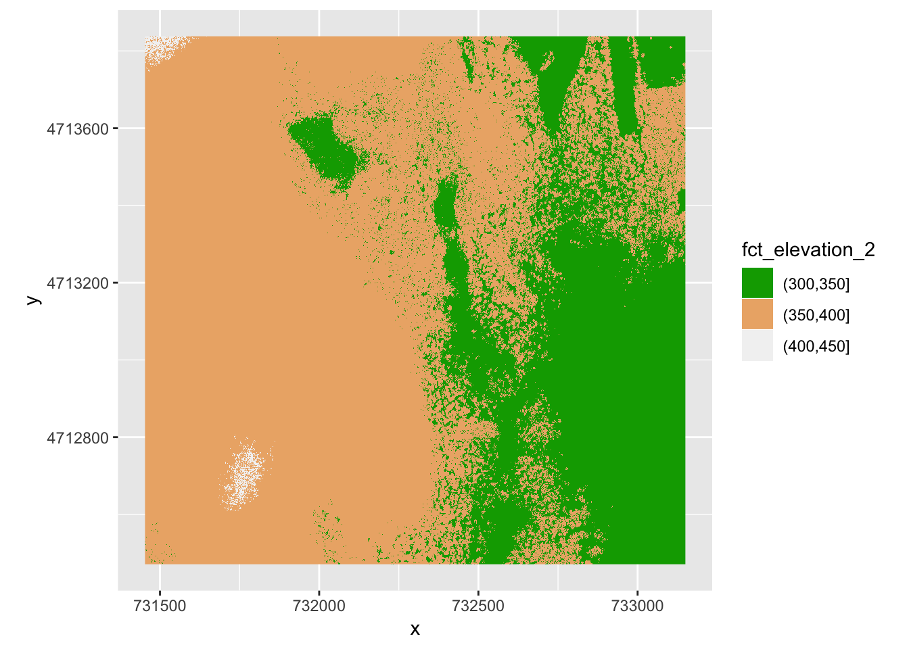
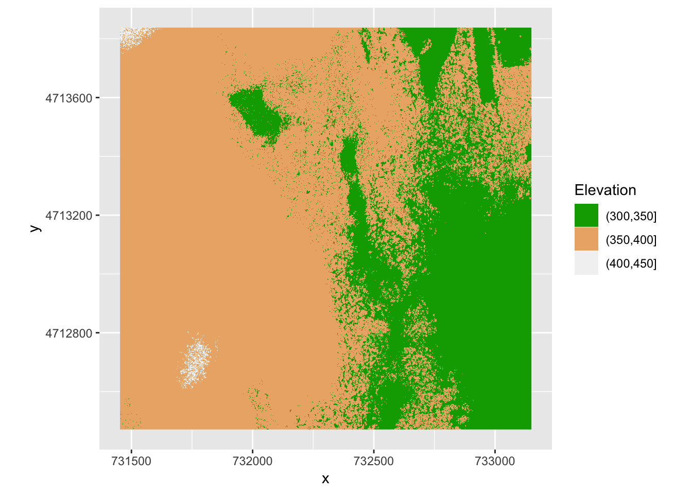
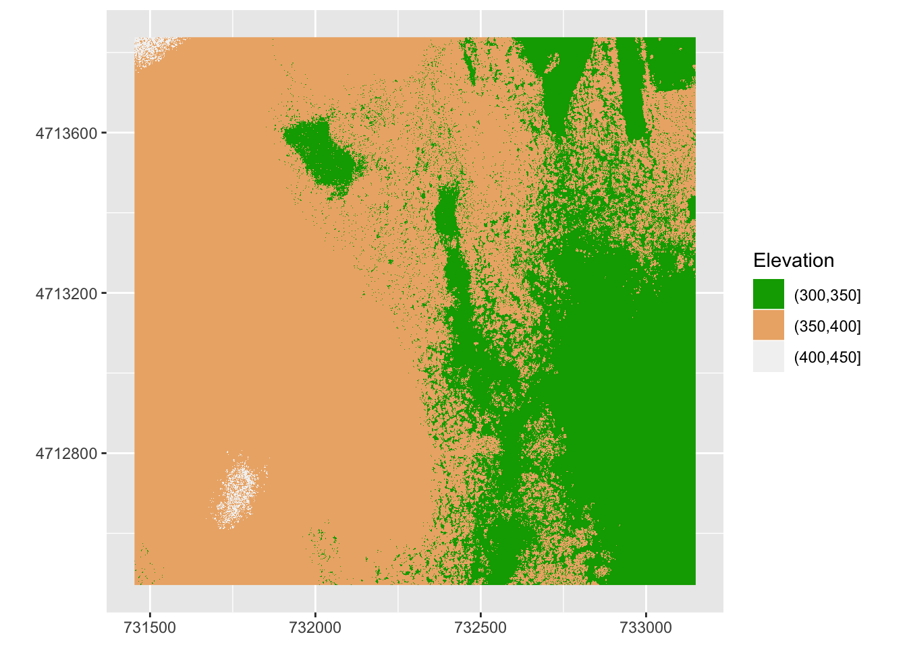
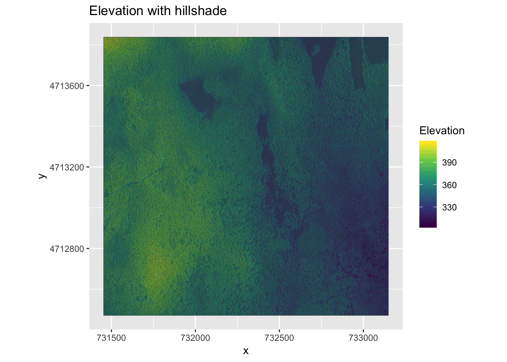
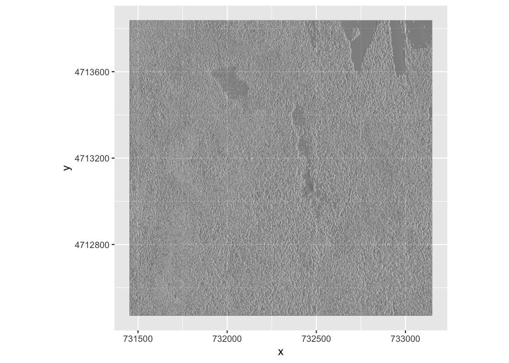
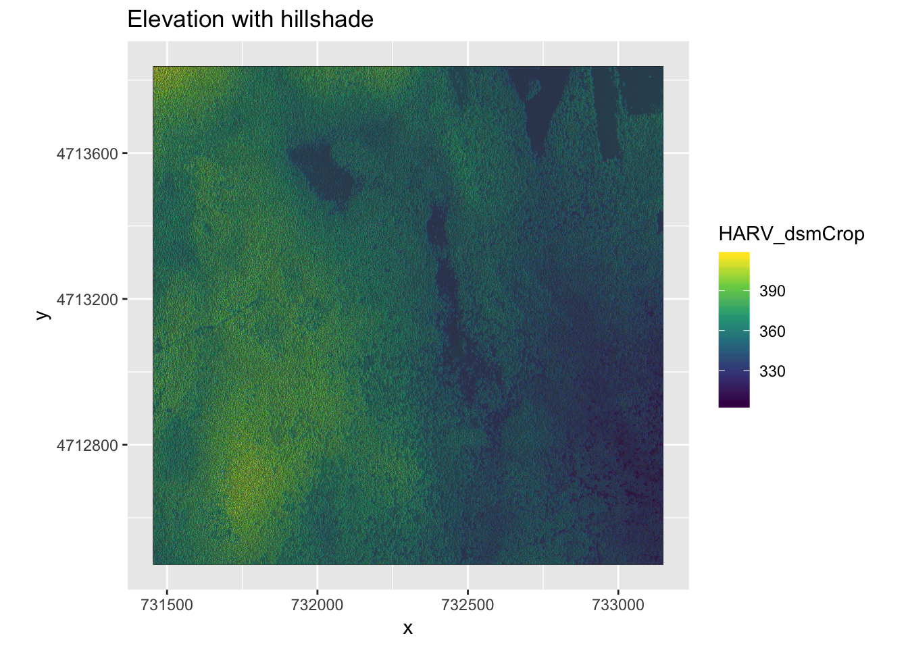

Questions: How can I create categorized or customized maps of raster data? How can I customize the color scheme of a raster image? How can I layer raster data in a single image?
Objectives: Build customized plots for a single band raster using the ggplot2 package. Layer a raster dataset on top of a hillshade to create an elegant basemap.
Plot Raster Data in R using ggplot
DSM_HARV_df <- DSM_HARV_df %>% mutate(fct_elevation = cut(HARV_dsmCrop, breaks = 3))
ggplot() +
geom_bar(data = DSM_HARV_df, aes(fct_elevation))
We can get the cut off values by asking the unique values of fct_elevation
unique(DSM_HARV_df$fct_elevation)## [1] (379,416] (342,379] (305,342]
## Levels: (305,342] (342,379] (379,416]And we can get the count of values in each group using dplyr’s group_by() and count() functions:
DSM_HARV_df %>%
group_by(fct_elevation) %>%
count()## # A tibble: 3 x 2
## # Groups: fct_elevation [3]
## fct_elevation n
## <fct> <int>
## 1 (305,342] 418891
## 2 (342,379] 1530073
## 3 (379,416] 370835Customize the cut off values, groups for the ranges of 301–350 m, 351–400 m, and 401–450 m.
custom_bins <- c(300, 350, 400, 450)
DSM_HARV_df <- DSM_HARV_df %>%
mutate(fct_elevation_2 = cut(HARV_dsmCrop, breaks = custom_bins))
unique(DSM_HARV_df$fct_elevation_2)## [1] (400,450] (350,400] (300,350]
## Levels: (300,350] (350,400] (400,450]And now we can plot our bar plot again, using the new groups:
ggplot() +
geom_bar(data = DSM_HARV_df, aes(fct_elevation_2))
As we did earlier, we can get the count of values in each group:
DSM_HARV_df %>%
group_by(fct_elevation_2) %>%
count()## # A tibble: 3 x 2
## # Groups: fct_elevation_2 [3]
## fct_elevation_2 n
## <fct> <int>
## 1 (300,350] 741815
## 2 (350,400] 1567316
## 3 (400,450] 10668Using ggplot ploting each group with a different color:
ggplot() +
geom_raster(data = DSM_HARV_df , aes(x = x, y = y, fill = fct_elevation_2)) +
coord_quickmap()
Above plot, the default colors is used for the raster objects. We can make it nicer by specifying colors ourself. We can use the R built in sets of colors or ploting terrain using terrain.colors().
terrain.colors(3)## [1] "#00A600FF" "#ECB176FF" "#F2F2F2FF"ggplot() +
geom_raster(data = DSM_HARV_df , aes(x = x, y = y,
fill = fct_elevation_2)) +
scale_fill_manual(values = terrain.colors(3)) +
coord_quickmap()
More Plot Formatting:
We can have an object or variable such as my_col to specify a color set, in case we have multiple plot and we want to chnage the pallete for all them, so we can do that by changing the my_col
we can also give a more meaningful name to legend
Also giving a name to xlabel and ylabel using xlab() and ylab() commands.
my_col <- terrain.colors(3)
ggplot() +
geom_raster(data = DSM_HARV_df , aes(x = x, y = y,fill = fct_elevation_2)) +
scale_fill_manual(values = my_col, name = "Elevation") +
coord_quickmap() 
What if we want to turn off the x and y labels, we shoud then use element_blank() to the relevant part of the theme() function.
ggplot() +
geom_raster(data = DSM_HARV_df , aes(x = x, y = y,
fill = fct_elevation_2)) +
scale_fill_manual(values = my_col, name = "Elevation") +
theme(axis.title = element_blank()) +
coord_quickmap()
Challenge:
Create a plot of the Harvard Forest Digital Surface Model (DSM) that has: 1. Six classified ranges of values (break points) that are evenly divided among the range of pixel values. 2. Axis labels. 3. A plot title.
DSM_HARV_df <- DSM_HARV_df %>%
mutate(fct_elevation_6 = cut(HARV_dsmCrop, breaks = 6))
my_col <- terrain.colors(6)
ggplot() +
geom_raster(data = DSM_HARV_df , aes(x = x, y = y,
fill = fct_elevation_6)) +
scale_fill_manual(values = my_col, name = "Elevation") +
ggtitle("Classified Elevation Map - NEON Harvard Forest Field Site") +
xlab("UTM Westing Coordinate (m)") +
ylab("UTM Northing Coordinate (m)") +
coord_quickmap()
We can layer a raster on top of a hillshade raster for the same area, and use a transparency factor to create a 3-dimensional shaded effect. A hillshade is a raster that maps the shadows and texture that you would see from above when viewing terrain. We will add a custom color, making the plot grey.
First we need to read the DSM hillshade data;
DSM_hill_HARV <-
raster("data/NEON-DS-Airborne-Remote-Sensing/HARV/DSM/HARV_DSMhill.tif")
DSM_hill_HARV## class : RasterLayer
## dimensions : 1367, 1697, 2319799 (nrow, ncol, ncell)
## resolution : 1, 1 (x, y)
## extent : 731453, 733150, 4712471, 4713838 (xmin, xmax, ymin, ymax)
## crs : +proj=utm +zone=18 +datum=WGS84 +units=m +no_defs +ellps=WGS84 +towgs84=0,0,0
## source : /Users/darya/Dropbox (Sydney Uni)/Training/19_09_11_ResBaz/19_01_11_ResBazGIS/data/NEON-DS-Airborne-Remote-Sensing/HARV/DSM/HARV_DSMhill.tif
## names : HARV_DSMhill
## values : -0.7136298, 0.9999997 (min, max)Then convert it to the data frame:
DSM_hill_HARV_df <- as.data.frame(DSM_hill_HARV, xy = TRUE)
str(DSM_hill_HARV_df)## 'data.frame': 2319799 obs. of 3 variables:
## $ x : num 731454 731454 731456 731456 731458 ...
## $ y : num 4713838 4713838 4713838 4713838 4713838 ...
## $ HARV_DSMhill: num NA NA NA NA NA NA NA NA NA NA ...Then plot it using ggplot:
ggplot() +
geom_raster(data = DSM_hill_HARV_df,
aes(x = x, y = y, alpha = HARV_DSMhill)) +
scale_alpha(range = c(0.15, 0.65), guide = "none") +
coord_quickmap() Note: turn off the legend by adding guide = “none” to the scale_alpha function or theme(legend.position = “none”).
We can layer another raster on top of our hillshade by adding another call to the geom_raster() function.
ggplot() +
geom_raster(data = DSM_HARV_df ,
aes(x = x, y = y,
fill = HARV_dsmCrop)) +
geom_raster(data = DSM_hill_HARV_df,
aes(x = x, y = y,
alpha = HARV_DSMhill)) +
scale_fill_viridis_c() +
scale_alpha(range = c(0.15, 0.65), guide = "none") +
ggtitle("Elevation with hillshade") +
coord_quickmap() Note: The advantages of viridis palette: 1. a continuous blue to yellow scale that renders detail much more clearly than other palettes 2. the viridis palette is visible to those with color blindness. 3.the viridis palette translates readily to a well-differentiated grey-scale.
Notes on raster structure